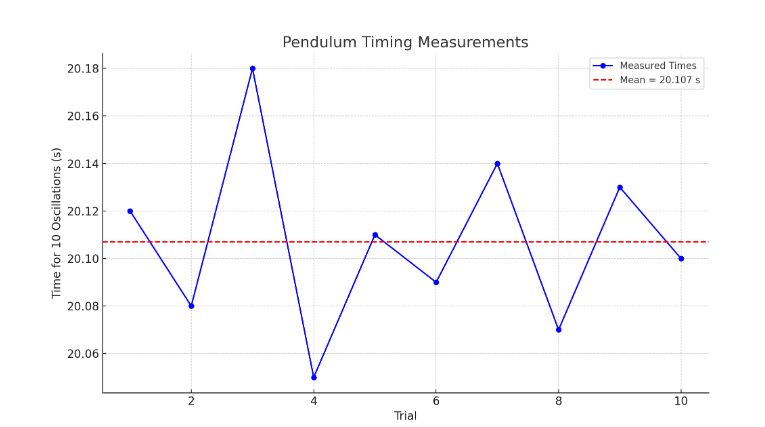

Problem 1: Measuring Earth's Gravitational Acceleration with a Pendulum
Objective
To determine the acceleration due to gravity \(g\) by measuring the period of a simple pendulum and analyzing the uncertainties in the experiment.
Materials
- String (1.00 m long)
- Small mass (metal washer)
- Measuring tape (resolution ±0.5 cm)
- Stopwatch (smartphone app, resolution ±0.01 s)
- Rigid support
Experimental Setup
- Length of pendulum, \(L = 1.00 \, \text{m}\)
- Uncertainty in length: \(u_L = \frac{\text{resolution}}{2} = \frac{1\,\text{cm}}{2} = 0.005 \, \text{m}\)
Data Collection
Measured time for 10 oscillations (10 trials):
| Trial | Time for 10 Oscillations (s) |
|---|---|
| 1 | 20.12 |
| 2 | 20.08 |
| 3 | 20.18 |
| 4 | 20.05 |
| 5 | 20.11 |
| 6 | 20.09 |
| 7 | 20.14 |
| 8 | 20.07 |
| 9 | 20.13 |
| 10 | 20.10 |
Python Code for Analysis and Visualization
import numpy as np
import matplotlib.pyplot as plt
# Time data for 10 oscillations
time_10_oscillations = np.array([20.12, 20.08, 20.18, 20.05, 20.11,
20.09, 20.14, 20.07, 20.13, 20.10])
L = 1.00 # meters
u_L = 0.005 # meters
# Mean and std deviation of 10 oscillations
T10_mean = np.mean(time_10_oscillations)
T10_std = np.std(time_10_oscillations, ddof=1)
n = len(time_10_oscillations)
u_T10_mean = T10_std / np.sqrt(n)
# Period of one oscillation
T = T10_mean / 10
u_T = u_T10_mean / 10
# Calculate g
g = 4 * np.pi**2 * L / T**2
# Propagate uncertainty in g
u_g = g * np.sqrt((u_L / L)**2 + (2 * u_T / T)**2)
# Print results
print(f"Mean time for 10 oscillations: {T10_mean:.3f} s ± {u_T10_mean:.3f} s")
print(f"Period T: {T:.3f} s ± {u_T:.3f} s")
print(f"Calculated g: {g:.2f} m/s² ± {u_g:.2f} m/s²")
# Visualization
plt.figure(figsize=(8,5))
plt.plot(range(1, 11), time_10_oscillations, 'bo-', label='Measured Times')
plt.axhline(T10_mean, color='r', linestyle='--', label=f'Mean = {T10_mean:.2f} s')
plt.xlabel("Trial")
plt.ylabel("Time for 10 Oscillations (s)")
plt.title("Pendulum Timing Measurements")
plt.legend()
plt.grid(True)
plt.tight_layout()
plt.show()
Results
- Mean time for 10 oscillations: 20.107 s ± 0.013 s
- Period \(T\): 2.011 s ± 0.0013 s
- Calculated gravitational acceleration:
$$ g = 4\pi^2 \frac{L}{T^2} = \boxed{9.77 \pm 0.09 \, \text{m/s}^2} $$
Visualization
A plot showing the timing data and the average line is generated by the Python code.

Sources of Uncertainty:
-
Length Measurement:
-
Resolution of measuring tape introduces an uncertainty of ±0.005 m.
-
Assumes the mass hangs from a well-defined point (center of mass).
-
Time Measurement:
-
Manual operation introduces reaction-time errors (\~0.2 s total, mitigated by timing 10 oscillations).
-
Standard deviation and averaging reduce random timing errors.
-
Assumptions & Limitations:
-
Small angle approximation assumed (<15°).
- Air resistance and string flexibility neglected.
- Assumes a rigid pivot and no energy loss over cycles.
Conclusion
- The experimentally determined gravitational acceleration is 9.77 ± 0.09 m/s², which is very close to the standard value 9.81 m/s².
- The small deviation is within the uncertainty bounds, validating the accuracy of the method.
- Careful timing and averaging multiple trials significantly enhance precision.